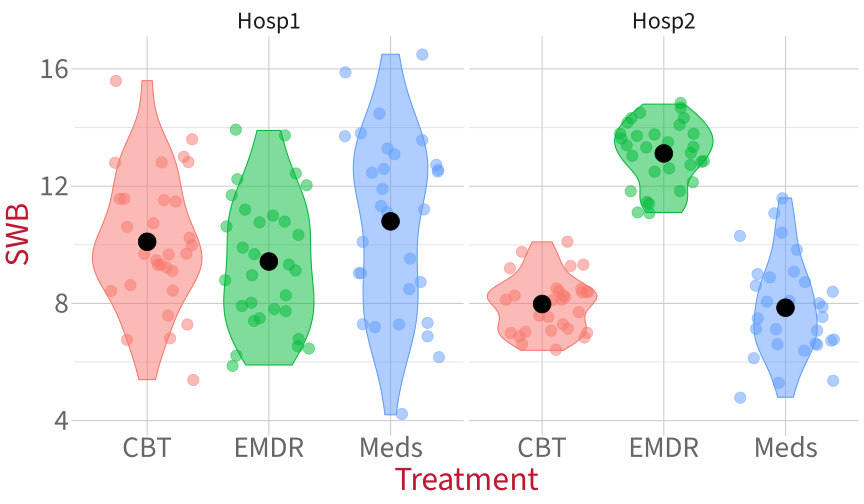
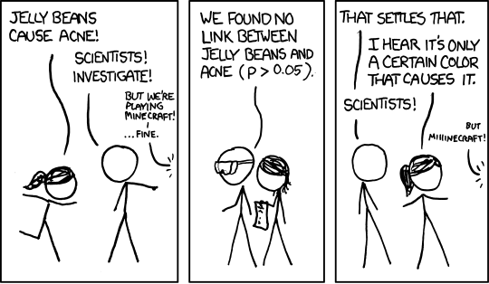
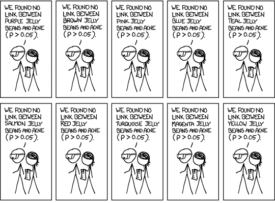
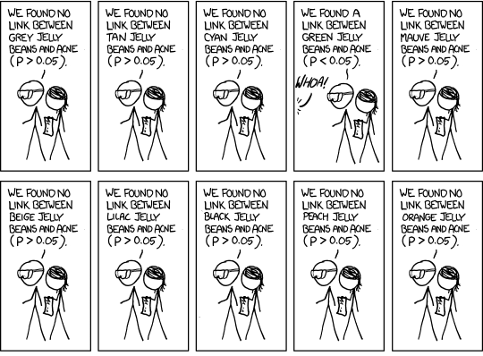
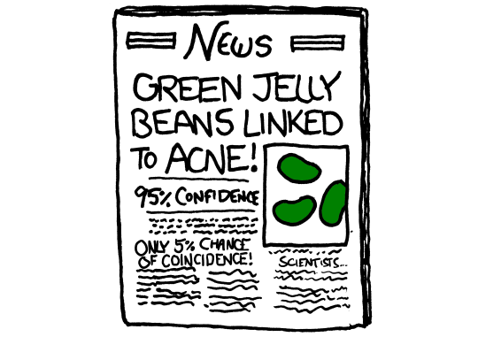
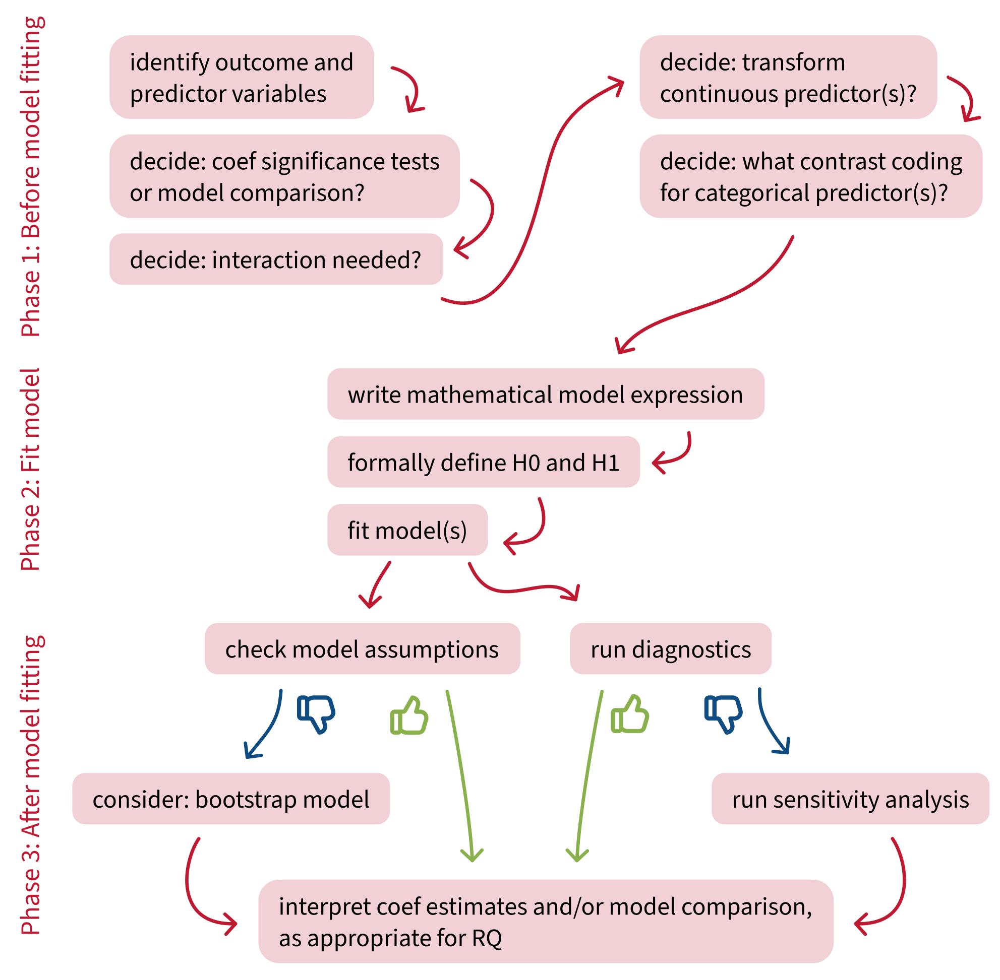

Testing simple effects and correcting for multiple comparisons
Data Analysis for Psychology in R 2
Dr. Elizabeth Pankratz (elizabeth.pankratz@ed.ac.uk)
Department of Psychology
University of Edinburgh
2026–2027
Course overview
|
Introduction to linear models (with Dr. Patrick Sturt) |
Introduction to linear regression |
| Interpreting linear models | |
| Testing predictors and evaluating linear models | |
| F-tests and model comparison | |
| Practice analysis: Linear models | |
|
Extending linear models (with Dr. Elizabeth Pankratz) |
Categorical predictors and treatment coding |
| Sum coding | |
| Assumptions and diagnostics | |
| Bootstrapping and confidence intervals | |
| Practice analysis: Categorical predictors (led by Patrick) |
|
Interactions (with Dr. Elizabeth Pankratz) |
Mean-centering and numeric/categorical interactions |
| Numeric/numeric interactions | |
| Categorical/categorical interactions | |
| Testing simple effects and correcting for multiple comparisons | |
| Practice analysis: Interactions (led by Patrick) | |
|
Logistic regression (with Dr. Elizabeth Pankratz) |
Probabilities and log-odds |
| Modelling binary outcomes with logistic regression | |
| Interactions, assumptions, diagnostics, comparisons | |
| Practice analysis: Logistic regression (led by Patrick) | |
| Report feedback, exam prep, full-course Q&A |
This week’s learning objectives
What does it mean to test a simple effect?
What’s the main danger of running multiple statistical tests on the same data?
What are two common ways that we can correct for running multiple statistical tests on the same data?
When does the multiple comparisons problem arise?
A new 2x3 cat/cat interaction analysis
Today’s data
The subjective wellbeing (SWB) of patients at two different hospitals:
Hosp1:
Hosp2:
who have undergone one of three different treatments for depression:
Cognitive Behavioural Therapy (CBT)
Eye Movement Desensitisation and Reprocessing therapy (EMDR)
Antidepressant medication
(Meds):
Visualising the data
Set up the model
Check on the reference levels:
The model in R syntax:
Call:
lm(formula = SWB ~ Treatment * Hospital, data = hosp)
Residuals:
Min 1Q Median 3Q Max
-6.600 -1.253 0.108 1.265 5.700
Coefficients:
Estimate Std. Error t value Pr(>|t|)
(Intercept) 10.103 0.370 27.31 < 2e-16 ***
TreatmentEMDR -0.673 0.523 -1.29 0.20
TreatmentMeds 0.697 0.523 1.33 0.18
HospitalHosp2 -2.123 0.523 -4.06 7.4e-05 ***
TreatmentEMDR:HospitalHosp2 5.810 0.740 7.85 4.0e-13 ***
TreatmentMeds:HospitalHosp2 -0.823 0.740 -1.11 0.27
---
Signif. codes: 0 '***' 0.001 '**' 0.01 '*' 0.05 '.' 0.1 ' ' 1
Residual standard error: 2.03 on 174 degrees of freedom
Multiple R-squared: 0.448, Adjusted R-squared: 0.432
F-statistic: 28.2 on 5 and 174 DF, p-value: <2e-16On your own time, practice writing out the model’s linear expression in mathematical terms, and check the appendix for the solution :)
Testing simple effects
Retrieval practice: Testing simple effects
- What’s a simple effect?
- If I ask for simple effects of
Hospitalat each level ofTreatment, what am I looking for? - What’s the difference between simple effects and simple slopes?
- What does it mean to test a simple effect?
Testing simple effects with pairs()
We’ve seen the math of how to compute simple effects by hand.
But that only gives us the value of the effect, not a test of whether that value is significantly different from zero.
When we had continuous predictors, we could test simple slopes using probe_interactions().
Now that we have categorical predictors, the best way to test simple slopes is using the R code below (don’t worry too much about what the function emmeans() is doing, just trust that it works).
To get the simple effects of Hospital at each level of Treatment:
Simple effects of Hospital at each level of Treatment
Treatment = CBT:
contrast estimate SE df t.ratio p.value
Hosp1 - Hosp2 2.12 0.523 174 4.060 <0.0001
Treatment = EMDR:
contrast estimate SE df t.ratio p.value
Hosp1 - Hosp2 -3.69 0.523 174 -7.050 <0.0001
Treatment = Meds:
contrast estimate SE df t.ratio p.value
Hosp1 - Hosp2 2.95 0.523 174 5.630 <0.0001
Note on the positive/negative signs:
pairs()computesHosp1 – Hosp2because of how factor levels in the factorHospitalare ordered.- To compute
Hosp2 – Hosp1instead, we would have to codeHosp2as the reference level ofHospitalbefore fitting the model.
Simple effects of Treatment for each level of Hospital
Hospital = Hosp1:
contrast estimate SE df t.ratio p.value
CBT - EMDR 0.67 0.523 174 1.290 0.4040
CBT - Meds -0.70 0.523 174 -1.330 0.3800
EMDR - Meds -1.37 0.523 174 -2.620 0.0260
Hospital = Hosp2:
contrast estimate SE df t.ratio p.value
CBT - EMDR -5.14 0.523 174 -9.820 <0.0001
CBT - Meds 0.13 0.523 174 0.240 0.9680
EMDR - Meds 5.26 0.523 174 10.060 <0.0001
P value adjustment: tukey method for comparing a family of 3 estimates What’s this “P value adjustment: tukey method” thing?
We need a bit of backstory first…
The multiple comparisons problem
Let’s roll some dice
On a twenty-sided die (a d20), the probability of rolling a 1 (or any other individual number) is 1/20 = 5%.
But if we roll the d20 over and over again, the probability that we’ll roll a 1 at least once goes up and up and up.
\(.05\)
\(= 1 – 0.95\)
\(.0975\)
\(= 1 – (0.95 \times 0.95)\)
\(.1426\)
\(= 1 – (0.95 \times 0.95 \times 0.95) = 1 - 0.95^3\)
In general:
\[ P(\text{rolling a 1 in m rolls}) = 1 - (1 - 0.05)^m \]
What’s the probability that we’ll roll a 1 at least once in twenty rolls?
wooclap.com, code UBEQCF
From dice to statistical tests
Why did we spend time rolling those dice?
- When \(\alpha = .05\),
- we accept the risk that 5% of the time, we’ll reject the H0 when actually we shouldn’t.
- (aka that we’ll get a false positive result)
- (aka that we’ll make a Type I error)
- A d20 rolling a 1 happens with the same probability as us rejecting the H0 when actually we shouldn’t: one time in twenty.
- We saw that the probability of rolling a 1 at least once increases, the more dice you roll. It’s also true that the probability of rejecting the H0 when actually we shouldn’t will increase, the more statistical tests we run.
- So if we run 20 statistical tests, say, then even though we only want to incorrectly reject the H0 one time out of twenty (5% of the time), we would actually reject it with much higher probability.
- The actual level of risk becomes higher than the level of risk that we wanted.
relevant XKCD (https://xkcd.com/882/)




The more tests you run, the more likely you are to see something unlikely just due to chance
With \(\alpha = 0.05\), we accept the risk that, we will incorrectly reject the null hypothesis 5% of the time.
And if we accept that positive result and ignore all the negative results (green jelly bean style), then we run into the multiple comparisons problem: we are more than 5% likely to see at least one false positive, the more tests (aka, the more comparisons) we run.
How much more likely?
Depends on the number of tests.
\[ \begin{align} P(\text{incorrectly reject H0}) &= \alpha \\ P(\text{correctly reject H0}) &= 1 - \alpha \\ P(\text{correctly reject H0 in} ~m~ \text{tests}) &= (1 - \alpha)^m \\ P(\text{incorrectly reject H0 in} ~m~ \text{tests}) &= 1 - (1 - \alpha)^m \\ \end{align} \]
How likely are we to incorrectly reject H0?
For the green jelly beans scenario:
\[ \begin{align} P(\text{incorrectly reject H0 in 20 tests}) &= 1 - (1 - 0.05)^{20} \\ &= 1 - (0.95)^{20} \\ &= 1 - 0.36 \\ &= 0.64 \\ \end{align} \]
We accepted the risk of incorrectly rejecting the null hypothesis 5% of the time. But if we run 20 tests and accept any positive result, we will risk incorrectly rejecting H0 64% of the time!
How do we fix it?
Lower the \(\alpha\) level (aka our accepted level of risk, aka the false positive rate, aka the Type I error rate) to compensate for the increased probability of incorrectly rejecting H0.
Correcting for multiple comparisons
Common corrections
- Tukey
- Bonferroni
- Šídák
- Scheffe
- Holm’s step-down
- Hochberg’s step-up
- …
You only need to know about Tukey and Bonferroni, the two most common.
We’ll start with Bonferroni, because it’s simplest.
The Bonferroni correction
The goal is to lower the \(\alpha\) level of our tests so that it matches our desired level of risk.
The Bonferroni correction takes our original \(\alpha\) level and divides it by the number of tests:
\[ \alpha_{\text{Bonferroni}} = \frac{\alpha}{\text{number of tests}} \]
For the jelly bean scenario, with 20 tests:
For our simple effects of Treatment by Hospital, with three tests:
Bonferroni in action
Hospital = Hosp1:
contrast estimate SE df t.ratio p.value
CBT - EMDR 0.67 0.523 174 1.290 0.5990
CBT - Meds -0.70 0.523 174 -1.330 0.5540
EMDR - Meds -1.37 0.523 174 -2.620 0.0290
Hospital = Hosp2:
contrast estimate SE df t.ratio p.value
CBT - EMDR -5.14 0.523 174 -9.820 <0.0001
CBT - Meds 0.13 0.523 174 0.240 1.0000
EMDR - Meds 5.26 0.523 174 10.060 <0.0001
P value adjustment: bonferroni method for 3 tests Tukey’s Honest Significant Differences (HSD)
Think back to independent-samples t-tests in DAPR1:
- This kind of t-test compares whether two group means are significantly different from one another.
- The difference between group means is represented as a t-statistic.
- The t-statistic is compared to a critical value from the t-distribution to decide whether the difference is significant.
At heart, Tukey’s HSD is very similar!
- Tukey’s HSD compares the means of the members of one pair in a pairwise comparison.
- The difference between group means is represented as a q-statistic.
- The q-statistic is compared to a critical value from the studentised range distribution to decide whether the difference is significant.
You do not need to know anything more specific about this adjustment!
If you want to know, here’s a YouTube video that walks through the calculation. (The main action is between 3:41–7:42.)
Tukey in action
Hospital = Hosp1:
contrast estimate SE df t.ratio p.value
CBT - EMDR 0.67 0.523 174 1.290 0.4040
CBT - Meds -0.70 0.523 174 -1.330 0.3800
EMDR - Meds -1.37 0.523 174 -2.620 0.0260
Hospital = Hosp2:
contrast estimate SE df t.ratio p.value
CBT - EMDR -5.14 0.523 174 -9.820 <0.0001
CBT - Meds 0.13 0.523 174 0.240 0.9680
EMDR - Meds 5.26 0.523 174 10.060 <0.0001
P value adjustment: tukey method for comparing a family of 3 estimates When to choose Bonferroni vs. Tukey
When to choose Bonferroni:
- When you’re interested in a small number of comparisons.
- When you’ve got a set of p-values that come from the same data, regardless of what kind of test generated them.
When to choose Tukey:
- When you want to compare the means of levels of a categorical predictor.
- When you’re interested in many/all pairwise comparisons between groups.
Check the flashcards for more details.
When does the multiple comparisons problem arise?
When does the multiple comparisons problem arise?
Anytime you’re running multiple statistical tests on the same dataset and using them both to draw conclusions.
- For example, imagine that for your dissertation one day, you’re running a t-test AND a linear model on the same dataset.
- For example, a t-test addresses RQ1, while the linear model addresses RQ2.
- Because both tests are run on the same data, you’d need to correct all the \(p\)-values involved. (In this case, Bonferroni is the easiest.)
Elizabeth’s advice to avoid the multiple comparisons problem:
- You can very often address multiple research questions using one single well-designed linear model.
- Only run the statistical tests that are absolutely necessary for addressing your research question(s).
- In general: run as few statistical tests as possible.
- If in doubt, correct your \(p\)-values. It’s never a bad thing to be more conservative about rejecting H0.
Building an analysis workflow
Building an analysis workflow

Back matter
Revisiting this week’s learning objectives
What does it mean to test a simple effect?
- Test statistically whether the simple effect (or simple slope) is significantly different from zero.
What’s the main danger of running multiple statistical tests on the same data?
- We’ll end up rejecting the H0 at least once in all those tests with a probability much higher than our desired \(\alpha\) level.
- This phenomenon is called the “multiple comparisons problem”.
- The solution: Make the \(\alpha\) level smaller, to compensate for this increased likelihood of rejecting the H0.
What are two common ways that we can correct for running multiple statistical tests on the same data?
- Bonferroni correction (a global adjustment to all \(\alpha\)s).
- Tukey’s HSD (an adjustment to each comparison’s \(\alpha\) based on how different the two group means being compared are).
When does the multiple comparisons problem arise?
- Not just when you’re testing multiple simple slopes.
- Any time you’re running and interpreting more than one statistical test with the same data.
This week
Tasks:
 Work on exercises in labs
Work on exercises in labs
 Complete the weekly quiz
Complete the weekly quiz
Get support:
 Consult the flash cards
Consult the flash cards
 Ask questions anonymously on Piazza
Ask questions anonymously on Piazza
 We really like seeing you in office hours!
We really like seeing you in office hours!
Appendix
Linear expression for model
\[
\begin{align}
\text{SWB} ~=~& \beta_0 +
(\beta_1 \cdot \text{Treatment}_{\text{EMDR}}) +
(\beta_2 \cdot \text{Treatment}_{\text{Meds}}) +
(\beta_3 \cdot \text{Hospital}) ~ + \\
& (\beta_4 \cdot \text{Treatment}_{\text{EMDR}} \cdot \text{Hospital}) +
(\beta_5 \cdot \text{Treatment}_{\text{Meds}} \cdot \text{Hospital}) +
\epsilon
\end{align}
\]
Are we adjusting \(\alpha\) or p?
If we compare pairs() with no correction and with the Bonferroni correction, it’s only the p-values that change.
Hospital = Hosp1:
contrast estimate SE df t.ratio p.value
CBT - EMDR 0.67 0.523 174 1.290 0.2000
CBT - Meds -0.70 0.523 174 -1.330 0.1850
EMDR - Meds -1.37 0.523 174 -2.620 0.0100
Hospital = Hosp2:
contrast estimate SE df t.ratio p.value
CBT - EMDR -5.14 0.523 174 -9.820 <0.0001
CBT - Meds 0.13 0.523 174 0.240 0.8090
EMDR - Meds 5.26 0.523 174 10.060 <0.0001Hospital = Hosp1:
contrast estimate SE df t.ratio p.value
CBT - EMDR 0.67 0.523 174 1.290 0.5990
CBT - Meds -0.70 0.523 174 -1.330 0.5540
EMDR - Meds -1.37 0.523 174 -2.620 0.0290
Hospital = Hosp2:
contrast estimate SE df t.ratio p.value
CBT - EMDR -5.14 0.523 174 -9.820 <0.0001
CBT - Meds 0.13 0.523 174 0.240 1.0000
EMDR - Meds 5.26 0.523 174 10.060 <0.0001
P value adjustment: bonferroni method for 3 tests So technically, pairs() adjusts p, not \(\alpha\). But whichever one is adjusted, the results are equivalent!
Adjusting \(\alpha\) by dividing by 3 is the same as adjusting p by multiplying by 3 (and if the value ends up above 1, setting it equal to 1).
For example, the unadjusted p-value in Hosp1 for CBT - Meds, 0.1847, multiplied by 3 (the number of tests), is the Bonferroni-adjusted p-value, 0.5541.